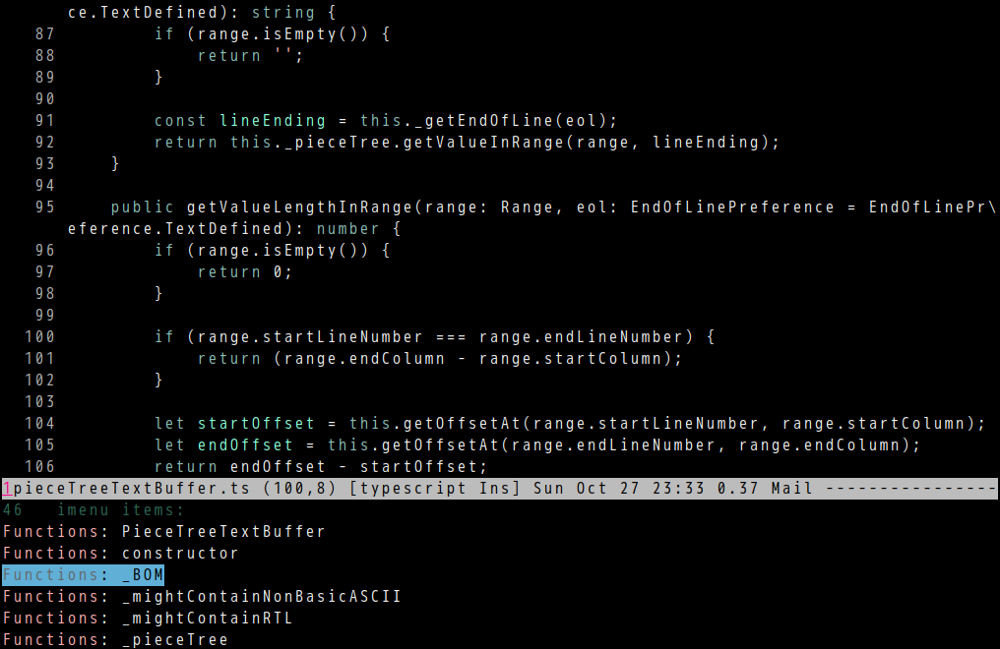

counsel-etags 1.9.0 is out
Counsel-etags is fast, energy-saving, and powerful code navigation solution.
This version can list tags in current buffer.
You can simply run M-x counsel-etags-list-tag-in-current-file.
Or set up imenu before M-x imenu or M-x helm-imenu or M-x counsel-imenu,
(setq imenu-create-index-function 'counsel-etags-imenu-default-create-index-function)
screenshot:
